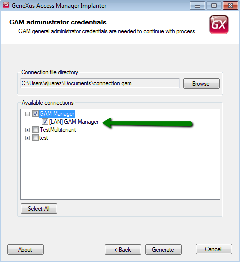
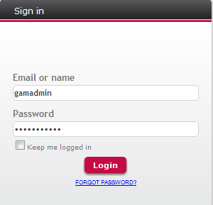
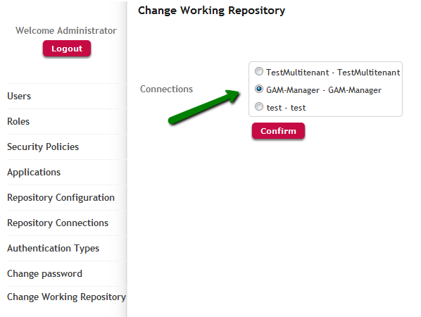

GAM Manager Repository is a particular Repository used to administer the rest of the Repositories, and users of this Repository are the only ones who can create new Repositories and manage them.
In this document we explain how to connect to "GAM Manager Repository".
The GAM Repository Connection to "GAM Manager Repository" already exists in the GAM database.
1. You need to connect to GAM Manager Repository, using "gamadmin".
You should create an entry in connection.gam file with the GAM Repository Connection to "GAM Manager Repository". The way to do this is through the GAMDeployTool. See GAM Deploy Tool: Creating the connection.gam file.

After obtaining connection.gam file including the connection to "GAM Manager Repository", copy it to the virtual directory (or root of the webapp in case of JAVA applications). Now you are able to connect to the "GAM Manager Repository".
2. If the only connection which includes connection.gam is the one to "GAM Manager Repository", you can login using "gamadmin", and you will connect directly to "GAM Manager Repository".

If the connection.gam includes more than one connection ("GAM Manager Repository" and another one), the application will connect to the first connection found in connection.gam file (*).
In that case, you can "Change working Repository", by going through this link in GAM Backend.

(*) The reason why the application connects to the first connection found in connection.gam file is the following code in Start Event of "GAMExampleLogin" object.
GAM.GetConnections(&ConnectionInfoCollection) //If no connection is already being used If &ConnectionInfoCollection.Count > 0 and GAMRepository.GetId().IsEmpty() // the first connection found is established by default GAM.SetConnection(&ConnectionInfoCollection.Item(1).Name, &Errors) Else Do 'DisplayMessages' EndIf
The connection to the Repository is stored in the web session, the application stores in a web session the first connection found in connection.gam file and tries to connect to it.
If the user is not enabled in the Repository he is trying to connect to, an error is thrown: "User Unknown".
This error is thrown in the login execution:
&LoginOK = GAMRepository.Login(&UserName, &UserPassword, &AdditionalParameter, &Errors )
So, after performing "Change Working Repository", the user who is logged will be automatically logged out unless he is a user of GAM Manager Repository. When logged out, you can log in using "gamadmin" credentials, as shown in figure 2.
Now you are working at "GAM Manager Repository". There you can add new administrator users, and perform all the tasks this users can (see: Howto: Create new Repositories).
The GAM Backend uses the GAM API in fact, so the objects distributed in GAM Library can be taken as examples on how to program the operations desired.
1. You can have the GAM backend published only to administrators of GAM Manager Repository, so the connection.gam file will need to include only the connection to this Repository.
2. If not, and the application installation is the same for all users (administrators, as well as non administrator users) you need to include in connection.gam file all the necessary connections, but in code you need to set the connection to the corresponding GAM Repository Connection depending on the user who has signed in. See HowTo: Get and Set GAM Repository Connections.